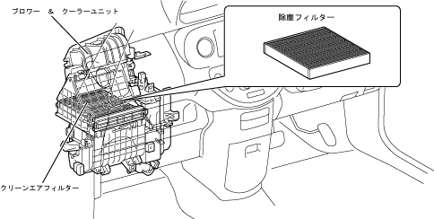

| Clean air filter |
| ● |
A dust removal filter (pollen removal type) is used as a clean air filter that cleans the air out of the car room, and has been set as standard for all vehicles.
|
| ● |
The dust -exclusion filter adds an electro -let -layer that has greatly improved the bandal power to the removal layer of the coarse dust, and the optimal fiber configuration and the structure that can be cleaned to reduce the increase in ventilation resistance and realize long life.And the pollen removal performance is dramatically improving.
|
| ● |
The mounting position of the dust removal filter is the upper part of the blower fans, and by removing the one -touch clip of the clean air filter, it has a structure that can easily replace the filter, which has excellent service properties.In addition, an information label has been applied in the upper grab box.
|
| ■ Attention ■ | |
|
To replace the air filter, turn off the ignition switch before performing. Be sure to attach the filter.Using an air conditioner without wearing it may cause a failure. If the air conditioner air volume is significantly reduced, the filter will be clogged, so replace it. In order to maintain the dust collection capacity of the filter, regularly replace the filter (every 30,000 km).In addition, in areas with a lot of traffic, such as large cities, or in areas with a lot of dust, the life of the filter may be shorter and early replacement (10000 km) may be required. |
|  |